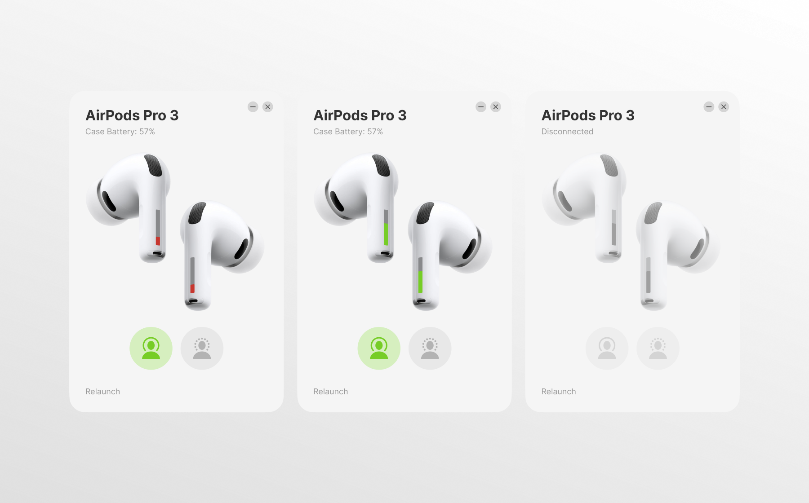
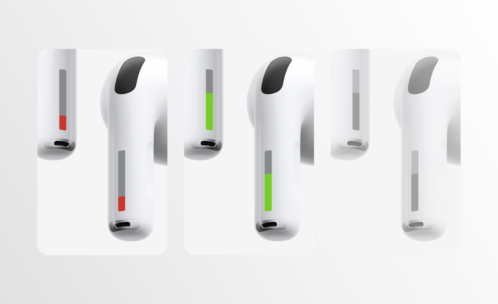
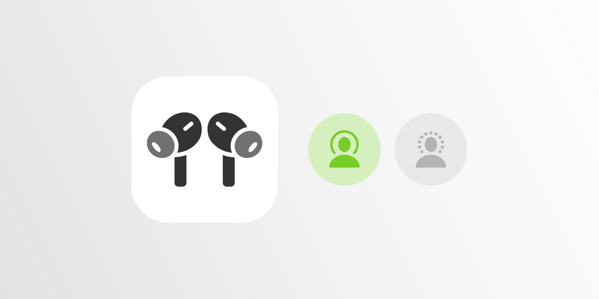
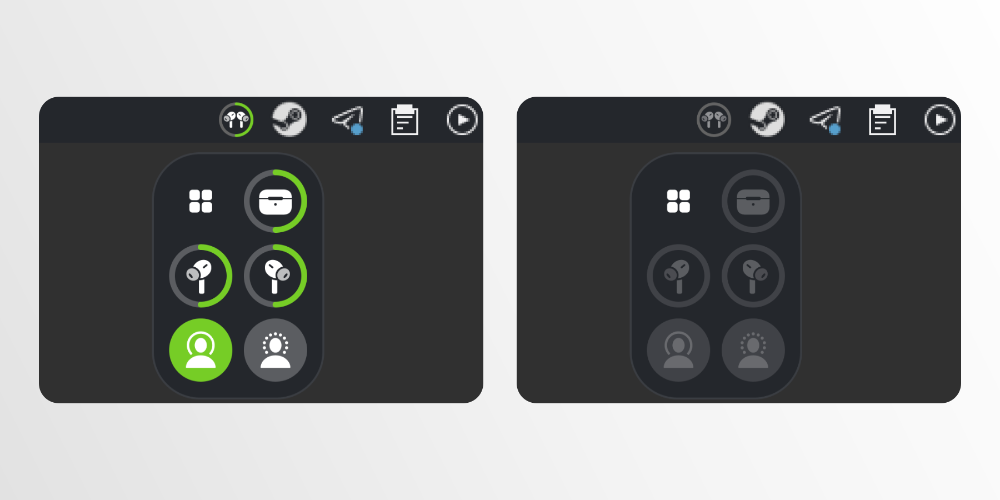

airpods pro on linux
I moved to Linux, and my AirPods Pro 3 quietly became ordinary Bluetooth earbuds: no noise cancellation switch, no battery, no auto-pause. Apple was never going to fix that, so I designed the app myself — and in one night took it from a Figma frame to a working tray app with Claude Code.

diegetic battery indicators
Battery lives on the earbuds, not next to them: a charge bar painted on each stem like an LED Apple forgot to install. Green, red below 25%, grey when the AirPods are away.

two modes, zero clutter
Only noise cancellation and transparency — tap the active one again to turn it off. Take a bud out and the music pauses; put both back and it plays on.

lives in the tray
A ring around the tray icon shows the charge at a glance. One click opens a compact widget with battery and both modes; right-click gives a native Plasma menu.
